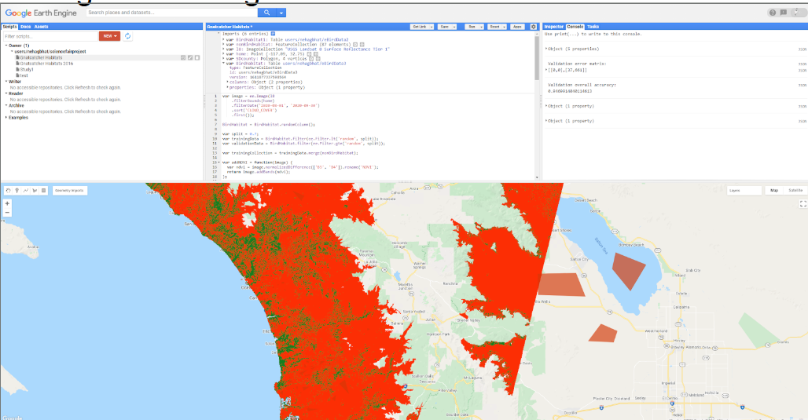

Endangered Bird Habitat Classification
- Built a supervised learning pipeline on Google Earth Engine to classify endangered bird habitats using eBird sightings data and Landsat 8 satellite imagery.
- Engineered features by integrating spectral bands, NDVI vegetation indices, elevation constraints, and labeled habitat/non-habitat polygons.
- Trained CART, Support Vector Machine (SVM), Random Forest, and MaxEnt classifiers and evaluated model performance using accuracy metrics (AUC-ROC) and spatial validation.
- Generated pixel-level classification maps to estimate total habitat vs. non-habitat area for land-use planning.